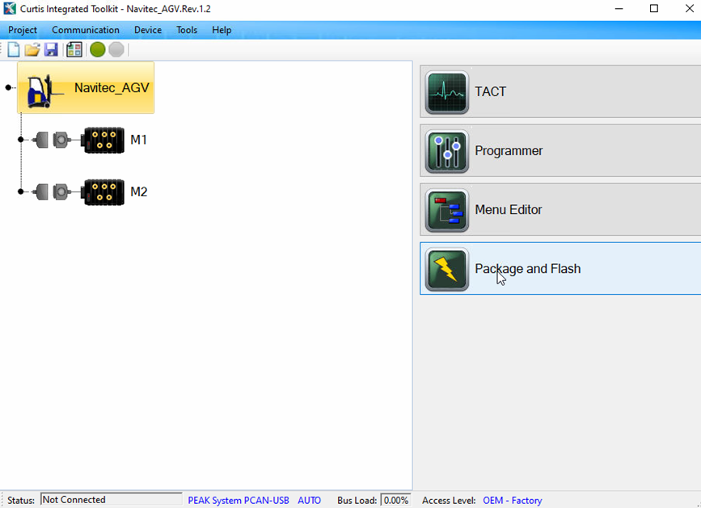
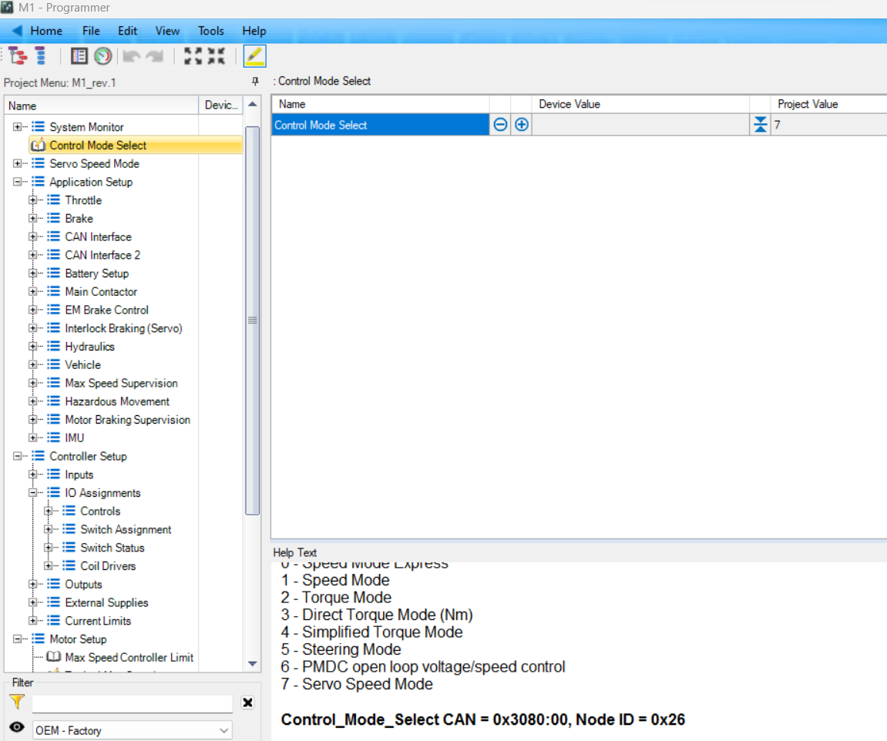
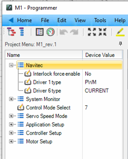
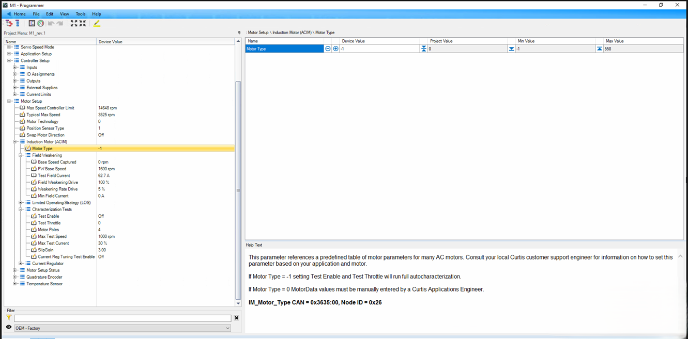
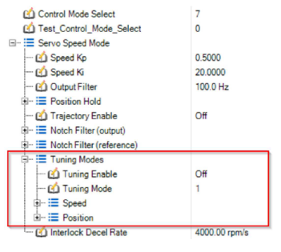
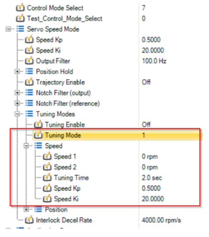
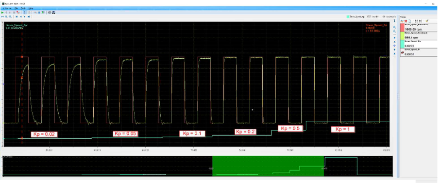
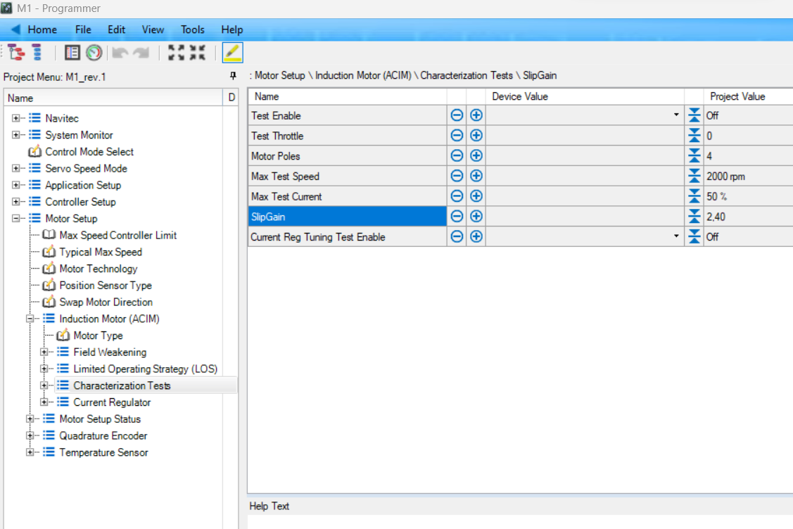
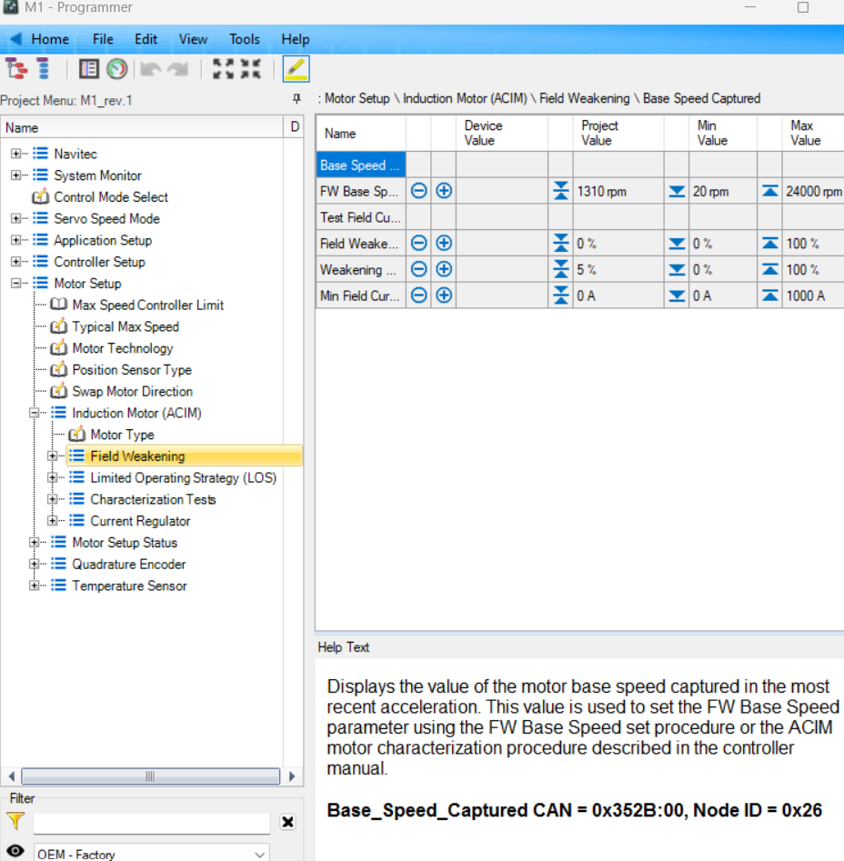

Curtis CAN motor controller
Updated 11.07.2024
Glossary
| Term | Description |
|---|---|
| SDO | Service Data Object |
| PDO | Process Data Object |
| CIT | Curtis Integrated Toolkit |
| PCAN-USB | Peak PCAN-USB adapter. Used to connect between CIT and motor controller |
Introduction
Curtis motor controller is one of the motor controllers supported by Navitrol. Curtis offers wide range of single and multi-channel motor controllers that can be used for different purposes (steering, driving, actuator) in the AGV.
This documentation provides instructions for configuring the motor controllers to be used with Navitrol. Operation of the device is possible via CANopen fieldbus.
Following motor controllers are supported by Navitec Systems:
-
F2-T. This motor controller has 3 channels
- 2 AC motor channels (can be used for driving/steering) and 1 DC pump (used for hydraulic actuator)
-
F2-D. This motor controller has 2 channels
- 2 AC motor connections (can be used for driving/steering)
-
Fx-A series. This motor controller has 1 channel. Supported models are F2-A, F4-A, F6-A, F10-A
- 1 AC motor connection (can be used for driving/steering)
The following motor types are supported.
-
AC Induction Motor (ACIM) This motor type by default uses the quadrature Encoder and supports auto-characterization. Contact Curtis if an ACIM application will use a Sin/Cos sensor (encoder)
-
Permanent magnet AC Motor (PMAC) PMAC motors by default use the Sin/Cos sensor type Encoder. Contact Curtis if a PMAC motor is chosen for the AGV
There might be some errors during commissioning procedure that are motor controller specific, so Navitrol support might be not able to solve them without Curtis support help. Contact information of Curtis support can be provided by Navitec Systems.
Currently, Curtis motor controllers can be supported for several kinematics:
-
Diff drive
-
Steer drive
-
Steer drive with a differential sub unit
-
Omni
Requirements
- The parameterization and configuration of the motor controllers takes place with the Curtis Integrated Toolkit (CIT) software. The software needs a license and it can be purchased from Curtis.
- Adapter to connect the motor controller to the CIT software. Curtis recommends PEAK System PCAN adapter
- A Project file (.cprj) for the motor controller, provided by Navitec Systems
- Different motor controllers have different project files. For example F2-D and F2-A models will use different project file
- Servo mode tuning template file (.ctrc) is needed and is proviced by Navitec Systems
Limitations
- Autocharacterization can be done only for AC induction motors (ACIM)
- PMAC motors characterization is done by Curtis on their dynomometer lab and motor might need to be shipped to Curtis. Please contact Curtis if planning to use PMAC motor
- Motor controller might not support all functions and kinematics. List of supported devices document should be checked to determine whether the combination of the function and kinematics is supported or not.
- Currently, Navitrol is not able to control Curtis motor controllers with other motor controllers in the same AGV
Dependencies
- Motor controllers common
- CAN Communication
- Initial Calibration Guide
- Curtis Motor controller listing
Electrical connections
Electrical connections can be divided into several groups:
-
High-current connections -- screw connections.
a. Battery connectors -- B+ and B- Important note: The battery should be connected using the main contactor. This is because the motor controller has a quite large capacitor installed between connectors. If the battery is directly connected, it may have a large current spike.
b. Motor terminals (U, V, W). Should be connected directly to the motor terminals
c. Pump connection Some of the motor controllers might have DC pump for actuator control. Then pump should be connected between "Pump" and "B+".
-
Low-current connections. All of the low power connections are through a single AMPSEAL connector. The following should be connected:
a. Key Switch This is the logical power input. Additionally, used to reboot the motor controller.
b. Coil Outputs (proportional valves). Those outputs are used for controlling the main contactor, brake release, and proportional valves. Wiring and pin number depends on the motor controller type.
c. CAN connection
d. SafeStop switch Pin that is used for E-STOP connection depends on the motor controller type. This pin should be powered during normal operation (Normally-closed contact).
e. Motor sensors (available only for AC-channel): encoder and temperature sensor.
f. Generic Switches Switches can be used as digital and analog inputs in some specific cases.
See Curtis Motor controller listing for more details.
Quick Setup
AGV off the ground
The following steps must be done so that AGV is lifted off the ground and motors can spin freely:
- Flash the project file to the motor controller with CIT software
- Controller Parameter Setup
- Auto Characterization for ACIM motor controllers
- Internal PI controller tuning
AGV on the ground
After commissioning has proceed to a point that all motor controllers PI tuning has been completed, the AGV must be put back to ground and continue with following steps:
How to use
To start the commissioning of Curtis motor controller, the following items are needed:
-
Can USB adapter. PEAK System PCAN USB-adapter was tested by Navitec and recommended by Curtis
-
CIT -- Curtis Integrated toolkit
-
Project file for Curtis Motor Controller model provided by Navitec Systems
Connect motor controllers to the CAN bus
Connect the motor controller and CAN adapter to the CAN bus. The motor controller should be connected to the CAN bus for commissioning one by one.
If the motor controller is wired correctly, there should be a heartbeat on the CAN bus.
If a PCAN-USB adapter is used, open PCAN-View software and check that heartbeat is present on the bus.
Default node Ids are 0x26 (hex) = 38 (dec) and 0x27 (hex) = 39 (dec).
Note: two and three-channel motor controllers (F2-D, F2-T) have two communication interface. Therefore, if the above-mentioned controllers are used, there should be a heartbeat from two node Ids.
Flash the project file to the motor controller with CIT software
The first step that should be done in commissioning the motor controller is to Flash the controller.
To communicate with Navitrol, the motor controller should have appropriate software with Navitec-specific modifications. To install the software on the motor controller, the user should flash the project file to the motor controller. The project file is provided by Navitec Systems.
The project file is device-specific and supported devices are mentioned in the project file.
To flash the project file to the controller:
- Open the project.
- Select the correct CAN adapter at the bottom of the window.
- Next, press the green circle button to establish communication with the motor controllers.
- Once communication is established, press "Package and Flash" to go to the flashing menu of the motor controller. If motor controller is two or three channel, flash the file on both of them. Note: Navitrol needs to be turned of when flashing the project file to the controller

Flashing the project file on the Curtis controller
Controller Parameter Setup
General controller parameters should be set once flashing is completed. Parameter change must be performed for all motor controllers (and for both M1 and M2 controllers in case two-channel motor controllers are used).
To change parameters:
- Open Curtis Integrated Toolkit
- Connect to motor controllers using the green circle button
- Select motor controller (For example M1 or M2) and press "Programmer" in the right corner menu.

Programmer View
The following parameters should be checked from the Programmer:
| Parameter Name | Path | Recommended Value | Notes |
|---|---|---|---|
| Control Mode Select | System Monitor » Control Mode Select | 7 | Always Servo mode for Navitrol to be able to utilize the motor controller |
| Nominal Battery Voltage | Applications Setup » Battery Setup » Nominal voltage | 24 | Typically 24 or 48 depending on the battery back |
| Main Contactor Pull in Voltage | Applications Setup » Main Contactor » Pull in Voltage | 100 | Check from main contactor document the correct Pull in voltage. Typically 100 |
| Main Contactor Holding Voltage | Applications Setup » Main Contactor » Holding Voltage | 80 | Check from main contactor document the correct Holding voltage. Typically 80 |
| EM Brake Pull in Voltage | Application Setup » EM Brake Control » Pull in Voltage | 100 | Check from Brake manufacturer document for correct Pull in Voltage. Typically 100 |
| EM Brake Holding Voltage | Application Setup » EM Brake Control » Holding Voltage | 70 | Check from Brake manufacturer document for correct Holding Voltage. Typically 70 |
| EM Brake Type | Application Setup » EM Brake Control » EM Brake Type | 0 | Always 0, defined automatically by Curtis |
| CAN Baud Rate | Application Setup » CAN interface 1/2 » Baud Rate | 0-2 | Baud Rate for the controller. Needs to be same as Navitrol Baud Rate. Note: Change applied only after reboot |
| CAN Node ID | Application Setup » CAN interface 1/2 » CAN Node ID | NodeId in hex (example 26h) | Node ID for the motor controller in hexadecimal. Note: Change applied only after reboot |
| EM Brake Driver | Controller setup » IO Assignments » Coil drivers » Em brake driver | 0 | Always 0, defined automatically by Curtis |
| Main Contactor Driver | Controller setup » IO Assignments » Coil drivers » Main contactor Driver | 5 | Check from Curtis Motor controller datasheet which driver is Main Contactor connected to. For example F4-A and F2-D Main Coil is connected to Driver 5 |
| Position Sensor type | Motor Setup » Position sensor type | 1 | Usually Quadrature encoder for ACIM motors. Check with customer which sensor they are using |
| Quadture Encoder 5V Voltage | Motor Setup » Quadrature Encoder » 5V output | True | |
| Quadture Encoder 12V Voltage | Motor Setup » Quadrature Encoder » 12V output | True | |
| Temperature Sensor Type | Motor Setup » Temperature Sensor » Sensor Type | 1-4 | Choose sensor type. 4 different sensors supported |
| Temperature Sensor Enabled | Motor Setup » Temperature Sensor » Sensor Enable | True | Check that temperature displayed in the menu corresponds to the actual temperature. |
| Temperature Sensor Max Temp | Motor Setup » Temperature Sensor » Temperature Max | 160 | Motor manufacturer provides this information |
| Temperature Sensor Hot Temp | Motor Setup » Temperature Sensor » Temperature Hot | 145 | Motor manufacturer provides this information |
| Interlock Input Source | Controller Setup » IO Assignments » Switch Assignment » Interlock Input Source | 0 | Always 0, defined automatically by Curtis |
For the PMAC motor set Sin/Cos Encoder parameters (Programmer » Motor Setup » Sin/Cos Encoder). Those parameters should be set according to the datasheet of encoder being used.
Once those parameters are set, it is possible to check Main Contactor and Brake operation. Go to:
- Programmer » Navitec » Interlock force enable and select "Yes".
- Check under System Monitor » Outputs
- Values increased from 0 to 70 or 80 the corresponding Drivers for example 5 and 2

Navitec menu in CIT
Once selected:
- Main contactor should be engaged
- Brakes should be released
Additionally, check if any errors appeared in Programmer. If there are some errors, react to them according to Curtis manual.
Auto Characterization for ACIM motor controllers
Once main parameters have been set and interlock can be released, characterizing the motor controller can be performed. Characterization means that the Motor controller will measure and tune motor parameters to establish optimal controllability of the motor.
The exact motor characterization model can be provided by Curtis. However, if Curtis does not have the characterization model available, the auto-characterization is needed. Autocharacterization and Slip Gain configuration are not needed when using the exact motor characterization model
The motor characterization should be performed for both M1 and M2 controllers in case two-channel motor controllers are used. Everything should be performed when wheels are off the ground.
Motor characterization is described in steps in Chapter 6 "Commissioning" of Curtis Manual. The procedure can be done in the following steps in Programmer:
- Set Motor Technology and Motor Type
| Parameter Name | Path | Recommended Value | Notes |
|---|---|---|---|
| Motor Technology | Motor Setup » Motor Technology | ACIM | ACIM or PMAC |
| Motor Type | Motor Setup » Induction Motor (ACIM) » Motor Type | -1 | -1 = Autocharacterization procedure used 1-588 = Exact motor characterization model provided by Curtis |
-
Clear Faults and do a power cycle of the controller. Only User 1 error (PDO timeout) can be present.
-
Enter the desired Max Test Current and Max Test Speed for the characterization test (in Motor Setup » Induction Motor (ACIM) » Characterization Tests). Typical settings are 70% current and 1/3 of max speed of the motor.
-
Enable interlock (Programmer » Navitec » Interlock force enable)
-
Set Test Enable = On (Motor Setup » Induction Motor (ACIM) » Characterization Tests)
-
Set Test Throttle = 1 (positive). After approximately 30 or more seconds, the motor will begin to pulsate and then rotate. It is critical to verify the motor is turning in the FORWARD vehicle direction. If it is not, set Test Throttle = 0, wait for the motor to come to a stop, then set Test Throttle = -1 (negative).
-
When auto characterization is completed, a Parameter Change message will appear. Do a power cycle to the controller.

Motor characterization
Internal PI controller tuning
PI controller must be tuned in order to control the motor accurately and fast.
- Change Tuning Mode to value 1 to enable speed controller tuning.

Tuning mode select
-
Set two speeds that will be used for speed tuning. The motor controller will switch between those speeds during the tuning procedure
-
Set initial PI gains. First, leave Ki to 0.0 and set Kp to some initial value (0.2 is a good starting value)

Setting speed settings and PI coefficients
-
Now go to the main page of the CIT software. Open TACT.
-
Open the Tuning template file from the File menu. The Tuning template file will be provided by Navitec.
-
Set Tuning Enable to value 1 in the Programmer
-
Press the green triangle button in TACT to start
-
The motor should start changing from Speed 1 to Speed 2 every Tuning Time interval. Increase Kp until slight overshoot is seen in the step response, then reduce the value of Speed Kp to approximately 2/3 of the present value. Typical values of well-tuned Speed Kp are 0.2-0.4 for small motors, much higher for larger motors.
-
After Speed Kp value is determined, start slowly raising Ki. The motor should now exactly converge to the requested speeds. Take larger steps for Ki, e.g. +2.0. Increase Ki until overshoot is seen in the step response, then reduce the value of Speed Ki to approximately 2/3 of the present value. Typical values of a well-tuned Speed Ki are between 0.1 and 0.9.

Tuning process in Oscilloscope
- Once tuning is completed, change the Tuning Enable parameter back to 0.
Navitrol parameterization
- Set CAN nodeId parameters according to Motor controllers common
- Set CAN communication parameters according to CAN communication document.
- The controller supports current limiting and control delays. Control delays are needed to ensure that the main contactor and brakes will be fully open when the motor controller will start driving.
Required parameters
| Name | Type | Default value | Description |
|---|---|---|---|
| mot_ctrl_max_output_current_percent | Int | 100 | Maximum output current (percent) sent to the motor controller |
| mot_ctrl_disable_delay_ms | Int | 1000 | Motor controller disabling delay [ms] after activating brakes: -1 = never disable, 0 = no delay |
| mot_ctrl_startup_delay_main_contactor_ms | Int | 0 | Time given for main contactor to stabilize before enabling drive. 0 = no delay, 500 = recommended for Schwarzmueller and Curtis |
| mot_ctrl_startup_delay_brake_release_ms | Int | 0 | Time given for brakes to fully open before giving rpm out. 0 = no delay, 200 = recommended for Schwarzmueller, 100..300 = recommended for Curtis |
Fine-tuning
If BMS is used, Navitrol can read BMS data from the motor controller. Set up BMS in CIT according to the controller manual. To activate BMS, use the parameters listed below
- Note: Not all types of batteries are supported by built-in BMS. This information should be checked with Curtis support.
Optional parameters
| Name | Type | Default value | Description |
|---|---|---|---|
| battery_percentage_from_mot_ctrl | Int | 0 | 1 to read battery percentage from motor controller, 0 to calculate it from battery voltage |
| battery_alert_from | Int | 0 | Battery Alert Mode: -1 = no alert, 0 = alert from low voltage, 1 = alert from low battery percentage |
| battery_alert_percentage | Float | 5.0f | Warning is set on low battery level [%] (battery_alert_from = 1) |
| can_sync | Int | 1 | Navigation SW (Primary CAN) role for CANOpen SYNC messages: 0 = None, 1 = SYNC producer, 2 = SYNC consumer |
Tune Slip gain
Slip gain need to be tuned after AGV is ready to be driven (Manually or with Navitrol). The steps to configure slip gain are:
- Connect a load cell between the vehicle and something that does not move
- A torque sensor needs to be connected to the motor to get the torque measurements
- Running the motor that it stalls. Change torgues that it does not slip
- Try to find highest torque produced by the motor and use that slip gain.
- Open Programmer and change SlipGain (Motor Setup » Induction Motor (ACIM) » Characterization Tests)
- First set to 3, then 1.5 and then 6. Check which produces the highest torque and fine-tune to find the highest torque produced

SlipGain on CIT Programmer
Curtis documentation tells more detailed how to configure the Slip Gain.
Base speed configuration
Base speed needs to be set up in order to utilize the motor controllers for driving. The following steps need to be executed.
-
Open Programmer in CIT software:
- Motor Setup » Induction Motor » Field Weakening
- Set FW Base Speed to 6000
- Motor Setup » Induction Motor » Field Weakening
-
Run the vehicle with very high acceleration. Controller will calculate the base speed itself and will inform the Base Speed Captured
-
Do the same test 5 times. Take the average Base Speed Captured
-
Set the FW Base Speed to the average calculated value

Base Speed setup on CIT Programmer
Curtis documentation tells more detailed how to configure the Base Speed.
Node Ids of the motor controller
Node Id:s should be configured in following way:
- Two-channel motor controllers should have consecutive node ids, where channel 1 has the lower Id and channel 2 the larger. For instance, if node Id of M1 (channel 1) is 0x27, then node Id of M2 (channel 2) is 0x28.
Troubleshooting
CAN-bus errors
Motor controller issues
If the motor controller indicates some errors, try the following:
-
If the motor controller is not rotated, check Navitrol terminal output or Navitrol Monitor errors or warnings. There should be some information about motor controller status and error if something is wrong.
-
If an error is active and does not reset after controller reboot, connect to the Motor controller with Curtis Integrated Toolkit to troubleshoot further.